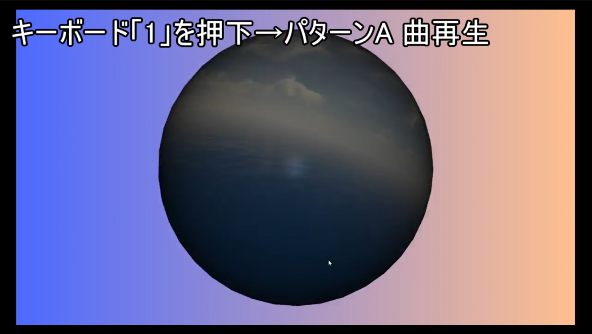

-Works-
ページ写真はこちら
- 
-
タイトル：
タッチデザイン
※横の画像をクリックすると動画が始まります
（スマホ・タブレットの方は上の画像をタップ） 目的：
TouchDesignerを利用したインタラクティブな映像芸術作品の制作課題説明：
インタラクティブなアートを制作する目的でTouch designerというソフトを利用して制作しました。特定のキーボードを押下することで球体が動いたり、曲が変わったり、球体が変化したり等をする。音楽はテンプレート素材とSonic Piで作成した自作曲となっている。使用ソフト：
[ソフト]Touch desiner / Sonic Pi